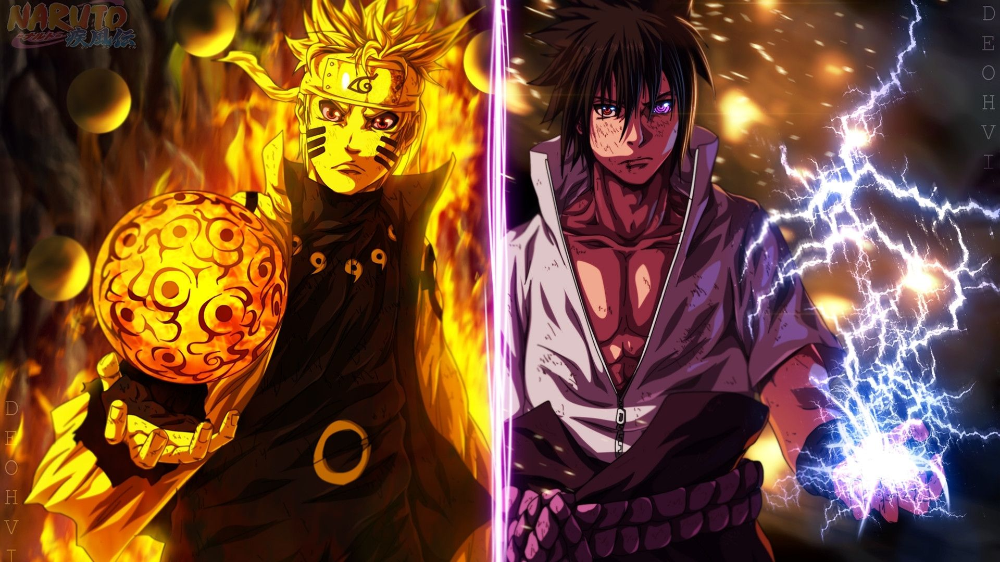

O Naruto pode ser um pouco duro às vezes Talvez você não saiba disso Mas o Naruto também Cresceu sem pai Na verdade, ele nunca conheceu nenhum de seus pais E nunca teve nenhum amigo em nossa aldeia Mesmo assim, eu nunca vi ele chorar Ficar zangado ou se dar por vencido Ele está sempre disposto a melhorar Ele quer ser respeitado, é o sonho dele E o Naruto daria a vida por isso sem hesitar Meu palpite é que ele se cansou de chorar E decidiu fazer alguma coisa a respeito.